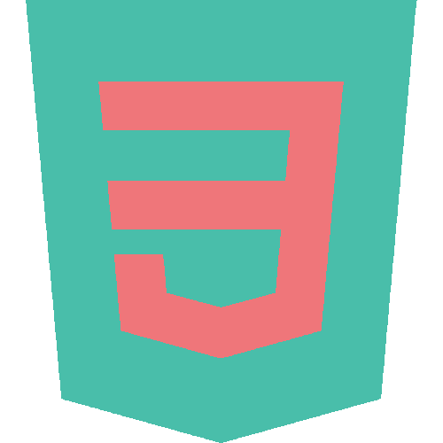
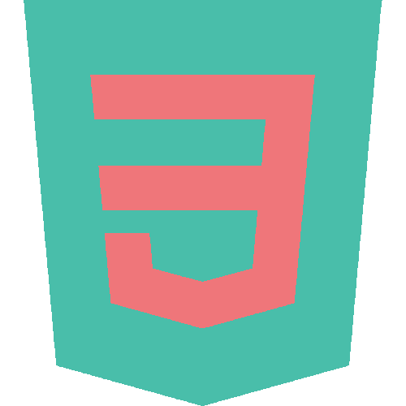
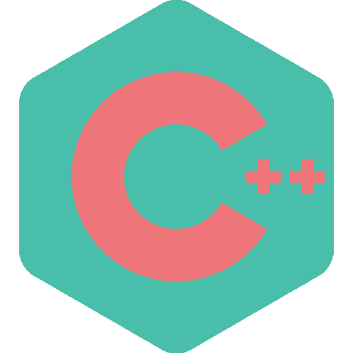
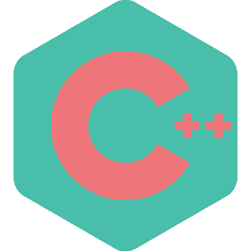

CS-499 Adam Morales ePortfolio
CS-499 Adam Morales ePortfolio


I first started programming in 2016 in my high school Java class.
I was enrolled at Oneonta for a couple years but transferred to SNHU in March of 2024.
My aspirations have changed multiple times throughout my years as a student. First I wanted
to become a Game Developer, then a Full Stack Developer, and now potentially a System Administrator.
There is a lot of work I've done to show that I am capable of what it takes to become either of
these roles.
I have learned so much just in the courses taught here at this university, but the real ways I've
learned how to program were from my personal projects on my personal portfolio. From my Anime Disucssion
board, to my Spotify stats app, spending time programming things that I love which came straight from
my own head, is what made me a better programmer.
Being at SNHU and being able to learn so many different skills has improved my ability to
adapt and problem solve so that in the real world once I start my career, I will be ready to
face on these challenges.


CS 330: Comp Graphics and Visualization
Source Code: 

CS 360: Mobile Architecture and Programming
Source Code:

CS 340: Advanced Programming Concepts
Source Code:
Project 1: Software Engineering and Design
While enhancing the project, I learned a lot about how light sources worked in OpenGL and how I can change the color tone and direction of the lights which I found very satisfying to work with even though I had to re run my project every single time I wanted to see the change which I wasn’t used to since in Blender you can see these changes real time. I had trouble visualizing where the lights would face and the direction they would be in when I was just looking at lines of code. Since it isn’t a very visual interface I had difficulty turning the lights to face the correct direction but nevertheless, I enjoyed this.Project 2: Algorithms and Data Structures
The artifact is a weight loss app that helps you log your weight every day and show you your progress in an easy to read table. It was created back in August 2025. I selected this item because it was a project that I initially was unhappy with how it turned out because I didn't work on it as much as I wish I had. The project was horribly unfinished and I wanted to finish it this time around, so I feel now I have met the course outcomes of this class. I had a lot of problems that I ran into while creating and improving it. My Android Studio was so outdated that it didn't even run at first, I had to install so many dependencies again and update a ton of various things to even get it to run. I was using such an old version of Android Studio from 2021 which is probably why I ran into so many issues.Project 3: Databases
This artifact is a python script that used data from an “AnimalShelter” database which contained numerous amounts of data on animals within an animal shelter. The python script interacts with the database and provides you with all the information you request. It was created back in August in my CS 340. I am including this in my ePortfolio because it displays skills that I really want to show such as my full stack programming experience. While Python isn’t really my go to, it shows that I at least understand web development. I fixed a lot of issues with the code this time around. I hadn’t really completed the project when I first submitted it for the class and it always feels weird not finishing a big project. Especially one that I spent 6 or 7 weeks on. I believe that this new version of the project meets the course requirements.<! - - While I mostly use JavaScript(VueJS), HTML and CSS, I'm also proficient in these too. - - >


 

 
